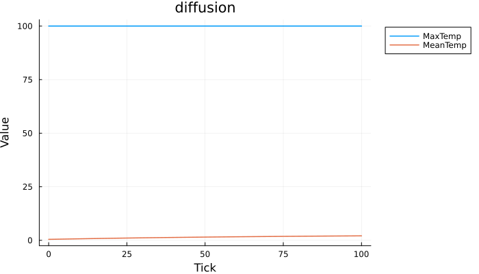
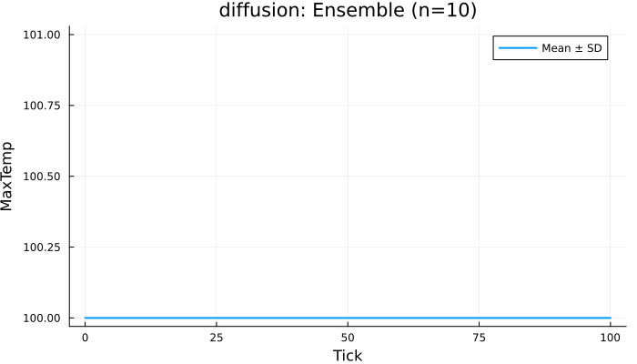

Heat Diffusion
Overview
WHAT IS IT?
This model simulates transient and steady-state temperature distribution of a thin plate. The View shows a square thin plate as viewed from above. The plate is thermally isolated on the two faces parallel to the view such that heat can flow only in and out from the perimeter of the plate and not into or out of the world. Heat is kept constant at the edges.
As the simulation runs, heat is transmitted from warmer parts of the plate to cooler parts of the plate as shown by the varying color of the plate. Therefore, the temperature of the plate begins to change immediately and possibly differently at different locations, gradually converging to a stable state. Overall, the temperature distribution over the plate is a function of time and location. In addition to this simple use of the model, you are encouraged to control various paramaters, such as the temperature of each edge edge of the plate and of the center of the plate before–and even while–the model is running.
HOW IT WORKS
Heat diffuses (“spreads”) at different rates through different media. These rates can be determined and are called the Thermal Diffusivity of the material. The Greek letter alpha is often associated with this value. The diffusivity of a material does not change based on how much of the material there is; it is always the same.
Below is a table containing several different materials with different diffusivity rates. See that wood (bottom row) has a lower heat diffusivity than, say, iron. This means that it takes a longer for heat to spread through a wooden object than an iron one. That is one reason why the handles of iron saucepans are often wooden and not the other way round.
Think of a marble table with iron legs that has just been put out in the sun in a street-side cafe. Which material part of the table do you expect will warm up faster? The model allows you to change thermal diffusivity of the plate in two ways. You can directly change the value of ALPHA to any value you like, or you can indirectly change ALPHA by selecting a material.
THINGS TO NOTICE
How does the equilibrium temperature distribution vary for different edge temperature settings?
Notice how an equilibrium (the steady-state condition) is reached.
Keep track of the units:
Variables | Units |
|---|---|
time | 0.1 second |
temperature | degrees Celsius |
length | centimeters |
diffusivity | square centimeters per second |
THINGS TO TRY
Set the parameters on the temperature sliders. Pick a value for ALPHA (or pick MATERIAL-TYPE and press UPDATE ALPHA). After you have changed all the sliders to values you like, press Setup followed by GO or GO ONCE.
Try different materials to observe the heat transfer speed. How does this compare to physical experiments?
Try the following sample settings:
- Top:100, Bottom:0, Left:0, Right:0
- Top:0, Bottom:100, Left:100, Right:100
- Top:0, Bottom:66, Left:99, Right:33
- Top:25, Bottom:25, Left:100, Right:0
EXTENDING THE MODEL
This model simulates a classic partial differential equation problem (that of heat diffusion). The thin square plate is a typical example, and the simplest model of the behavior. Try changing the shape or thickness of the plate (e.g. a circular or elliptical plate), or adding a hole in the center (the plate would then be a slice of a torus, a doughnut-shaped geometric object).
Add a slider to alter this thickness.
Try modeling derivative or combined boundary conditions.
RELATED MODELS
Checkout the other Materials Science models in the library
HOW TO CITE
If you mention this model or the NetLogo software in a publication, we ask that you include the citations below.
For the model itself:
- Wilensky, U. (1998). NetLogo Heat Diffusion model. http://ccl.northwestern.edu/netlogo/models/HeatDiffusion. Center for Connected Learning and Computer-Based Modeling, Northwestern University, Evanston, IL.
Please cite the NetLogo software as:
- Wilensky, U. (1999). NetLogo. http://ccl.northwestern.edu/netlogo/. Center for Connected Learning and Computer-Based Modeling, Northwestern University, Evanston, IL.
COPYRIGHT AND LICENSE
Copyright 1998 Uri Wilensky.

This model is licensed under the Creative Commons Attribution-NonCommercial-ShareAlike 3.0 License. To view a copy of this license, visit https://creativecommons.org/licenses/by-nc-sa/3.0/ or send a letter to Creative Commons, 559 Nathan Abbott Way, Stanford, California 94305, USA.
NetLogo itself is free software for non-commercial use under the terms of the GNU General Public License (see full license information here).
To inquire about commercial licenses for either NetLogo or specific models from the models library, please contact netlogo-commercial-admin@ccl.northwestern.edu.
This model was created as part of the project: CONNECTED MATHEMATICS: MAKING SENSE OF COMPLEX PHENOMENA THROUGH BUILDING OBJECT-BASED PARALLEL MODELS (OBPML). The project gratefully acknowledges the support of the National Science Foundation (Applications of Advanced Technologies Program) – grant numbers RED #9552950 and REC #9632612.
This model was converted to NetLogo as part of the projects: PARTICIPATORY SIMULATIONS: NETWORK-BASED DESIGN FOR SYSTEMS LEARNING IN CLASSROOMS and/or INTEGRATED SIMULATION AND MODELING ENVIRONMENT. The project gratefully acknowledges the support of the National Science Foundation (REPP & ROLE programs) – grant numbers REC #9814682 and REC-0126227. Converted from StarLogoT to NetLogo, 2001.
Parameters
| Parameter | Type | Default | Description |
|---|---|---|---|
grid_width | Int | 33 | grid width |
grid_height | Int | 33 | grid height |
max_ticks | Int | 100 | max ticks |
Source Code
The Julia code to run this model:
using ArkModelZoo
_, trajectory = run_diffusion()Time Series

Ensemble Runs
Ten replicates with different random seeds, showing mean ± standard deviation.

Appendix: Source Code
This model is implemented in the Ark.jl Entity-Component-System (ECS) framework. The code is split into five files, each with a distinct role:
- Parameters: a mutable struct holding all configurable values.
- Components: lightweight data types attached to individual entities (agents).
- Resources: world-level shared state accessible to all systems.
- Systems: functions that operate on entities each tick, defining model behavior.
- Model: wiring that assembles the world, registers resources and systems, and provides the run entry point.
Parameters (parameters.jl)
The parameter struct uses @kwdef so that every field has a default value and can be overridden by keyword. These defaults match the original NetLogo model’s slider settings.
Base.@kwdef mutable struct DiffusionParams
grid_width::Int = 33
grid_height::Int = 33
max_ticks::Int = 100
seed::Int = 42
endComponents (components.jl)
Components are lightweight data types attached to individual entities (agents). Mutable structs hold per-entity state, while empty tag structs act as markers for the ECS query system to efficiently filter entities.
# Diffusion model has no entity components — purely patch-based
struct DiffusionDummy endResources (resources.jl)
Resources are world-level singletons shared across all systems, used for global state and aggregate statistics.
mutable struct DiffusionGrid
width::Int
height::Int
temp::Matrix{Float64}
end
DiffusionGrid(w, h) = DiffusionGrid(w, h, zeros(Float64, w, h))
mutable struct DiffusionStats
max_temp::Float64
mean_temp::Float64
end
DiffusionStats() = DiffusionStats(0.0, 0.0)Systems (systems.jl)
Systems contain the model logic and execute in a defined order each tick. Each system struct implements either initialize! (run once at setup) or update! (run every tick).
# --- Initialization ---
struct InitDiffusionSystem <: System end
function initialize!(::InitDiffusionSystem, world::World)
grid = get_resource(world, DiffusionGrid)
stats = get_resource(world, DiffusionStats)
# Center patch (0,0) in NetLogo maps to (cx, cy) in a 33×33 grid
cx = (grid.width ÷ 2) + 1
cy = (grid.height ÷ 2) + 1
# NetLogo: ask patch 0 0 [ set temp 100 ]
grid.temp[cx, cy] = 100.0
# NetLogo: ask neighbors [ set temp 50 ] — 8 Moore neighbors (toroidal)
for (dx, dy) in ((-1,-1), (-1,0), (-1,1), (0,-1), (0,1), (1,-1), (1,0), (1,1))
nx = mod1(cx + dx, grid.width)
ny = mod1(cy + dy, grid.height)
grid.temp[nx, ny] = 50.0
end
stats.max_temp = maximum(grid.temp)
stats.mean_temp = Statistics.mean(grid.temp)
return nothing
end
# --- Diffuse + Decay + Re-heat center ---
# NetLogo: diffuse temp 0.5
# new[p] = old[p] * (1 - 0.5) + (0.5 / 8) * sum_of_8_neighbors(old)
# = 0.5 * old[p] + 0.0625 * sum_neighbors(old)
# Then: set temp temp * 0.99 (decay)
# Then: ask patch 0 0 [ set temp 100 ]
struct DiffusionUpdateSystem <: System end
function update!(::DiffusionUpdateSystem, world::World)
grid = get_resource(world, DiffusionGrid)
w, h = grid.width, grid.height
# Diffuse temp 0.5
diffuse!(grid.temp, 0.5, w, h)
# Decay: temp * 0.99
for x in 1:w, y in 1:h
grid.temp[x, y] *= 0.99
end
# Re-heat center
cx = (w ÷ 2) + 1
cy = (h ÷ 2) + 1
grid.temp[cx, cy] = 100.0
return nothing
end
# --- Stats ---
struct DiffusionStatsSystem <: System end
function update!(::DiffusionStatsSystem, world::World)
grid = get_resource(world, DiffusionGrid)
stats = get_resource(world, DiffusionStats)
stats.max_temp = maximum(grid.temp)
stats.mean_temp = Statistics.mean(grid.temp)
return nothing
end
# --- Termination ---
struct DiffusionTerminationSystem <: System end
function update!(::DiffusionTerminationSystem, world::World)
params = get_resource(world, DiffusionParams)
tick = get_resource(world, Tick)
# tick.tick is the count before this step's increment; after the step
# it becomes tick.tick + 1. Stop so that exactly max_ticks updates run.
if tick.tick + 1 >= params.max_ticks
get_resource(world, Terminate).stop = true
end
return nothing
endModel (model.jl)
The model file assembles all pieces: it creates the ECS World with the required component types, registers resources, builds the Scheduler with systems in execution order, and exposes the public run entry point. The observer pattern records the trajectory each tick.
function diffusion_world(; initial_capacity::Int = 128)
return World(
DiffusionDummy;
initial_capacity = initial_capacity,
allow_mutable = true,
)
end
function diffusion_systems()
return (
InitDiffusionSystem(),
DiffusionUpdateSystem(),
DiffusionStatsSystem(),
DiffusionTerminationSystem(),
)
end
function diffusion_model(params::DiffusionParams = DiffusionParams())
world = diffusion_world()
_add_standard_resources!(world, params)
add_resource!(world, DiffusionGrid(params.grid_width, params.grid_height))
add_resource!(world, DiffusionStats())
scheduler = Scheduler(world, diffusion_systems())
initialize!(scheduler)
return scheduler
end
struct DiffusionObserver end
function diffusion_headers(::DiffusionObserver)
return ["MaxTemp", "MeanTemp"]
end
function diffusion_values(::DiffusionObserver, world::World)
stats = get_resource(world, DiffusionStats)
return Float64[stats.max_temp, stats.mean_temp]
end
function run_diffusion(; params::DiffusionParams = DiffusionParams(), observe::Bool = true)
return _run_model(diffusion_model, DiffusionObserver(), diffusion_values; params, observe)
end